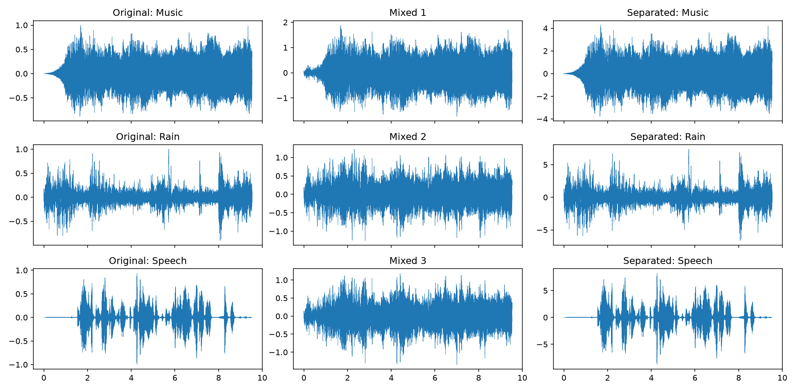

Mixture 1
One combined microphone signal.
Independent Component Analysis (ICA) estimates the original, statistically independent sounds from recordings where those sounds have been blended together.
Python · NumPy · FastICAEach row tracks one source through its original waveform, a mixed recording, and the ICA estimate.

Generated by run_ica.py. ICA can recover a source up to a change in order, loudness, and sign.
Compare each mixture with the FastICA and PCA output. Use headphones to hear the differences more clearly.
One combined microphone signal.
A different blend of the same sources.
A third independent blend.
Estimated independent source.
Estimated independent source.
Estimated independent source.
Whitened component matched to music.
Whitened component matched to rain.
Whitened component matched to speech.
The implementation builds the solution in three understandable stages.
A mixing matrix combines the source waveforms into multiple observed signals.
Centering and PCA whitening remove the mean and make components uncorrelated with equal variance.
FastICA searches for directions with non-Gaussian outputs, estimating the independent sources.
ICA has inherent ambiguities: it cannot determine the original source order, absolute loudness, or sign. Separation quality also depends on the sources being sufficiently independent and the number of mixtures matching the number of sources.